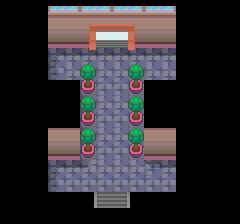

058 传递信件
一句话目标：帮 35 号道路走不开的警卫，把回信送到 31 号道路的朋友手里，再回去复命。
接取地点
准备条件
- 接受任务后会拿到信件 0274，送信时才会交出。
操作步骤
- 在 35 号道路 (44:8) 与警卫 (5,10) 对话，他说收到朋友邮件、写好回信却走不开，请你代送；答应后出现「接受任务:<送信>」（旗标 2581），获得信件 0274 ×1。
- 前往 31 号道路 (3:83)，把信交给正在睡觉的朋友 (18,8)。他读信后送上谢礼（交出信件 274×1，旗标 2582）。
- 回 35 号道路向警卫复命。他坦白其实能自己走开、利用了你的好意，为表歉意再送你一份谢礼（旗标 2583）。
交付检查
信件送达 31 号道路的朋友后，回 35 号道路向警卫复命即可领完报酬，任务完成（旗标 2582）。
奖励
- TM44 · 睡觉 0332 ×1、经验糖果S 0537 ×1
- 5 点 BracerPoints、5000$
- 复命时再加 HP增强剂 0063 ×1
容易卡住的位置
- 朋友在未接取任务时一直在睡觉；接取后才有送信流程。
- 送信后记得回 35 号道路找警卫复命，否则拿不到 HP增强剂(63)。
- 信件 274 在送达时被 removeitem×1。
来源与待补字段
- 来源包：data/quest_packets/058.json。
地点地图
共享RGB底图；点击可缩放定位。数字对应本页相关地点，不代表地图上全部事件。
35号道路

1 传递信件（5,10） 底图有9个图块缺少原始数据。
31号道路


1 传递信件（18,8）